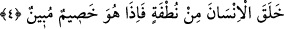

Denilir ki: Allah Teâlâ yüce ruhları ve süflî bedenleri fiillerinin mazharı olarak
yaratmıştır. O, ruhlar ve bedenler üzerinde zuhûr eden her şeyin mutlak fâilidir.
“O, onların koştukları ortaklardan münezzehtir.” müşriklerin şirk koştukları, yâni
Allah’a ortak kabûl ettikleri, yaratamayan ve diriltemeyen, batıl ve kıymetsiz şeylerden
yüce ve büyüktür.
Sâlikin Allah Teâlâ’yı zâtı, sıfatları ve fiilleri hususunda “bir” kabûl etmesi gerekir.
Çünkü O, mutlak fâildir. Buna perde olan birtakım vâsıta ve sebebler yaratmışsa da
onları, her hangi bir vâsıta olmaksızın bizzat yaratan yine O’dur. “Artık her kim
Rabbine kavuşmayı umuyorsa, sâlih amel yapsın” Sâlih amel, sırf Allah rızası için
işlenen ameldir. “ve Rabbine ibâdette hiçbir şeyi ortak koşmasın.” (el-Kehf, 18/110)
Riyâkarın da müşrik olduğu söylenmiştir.
Mürâî herkesi mâbud edinir
O sebepten mürâîye müşrik derler
4. O, insanı bir damla sudan yarattı. Fakat bakarsın ki (insan) Rabbine apaçık bir
hasım oluvermiştir.
“O, insanı” yâni Âdemoğullarını “bir damla sudan” erkeğin suyundan “yarattı.”
Yâni his, hareket ve idrâki olmayan, cansız, bir yerde durmayan ve şekil kabûl etmeyen
akıcı meni suyuna idrâk ve akıl verdi.
Onların ebeveyni olan Âdem ve Havva ise nutfeden yaratılmamıştır. Âdem (a.s.)
topraktan, Havvâ ise onun sol kaburga kemiğinden yaratılmıştır.
“Fakat bakarsın ki” insan yaratıldıktan sonra “Rabbine apaçık” delil ortaya koyan
ya da husûmetinin ve cedelinin fazlalığında şüphe olmayan, âşikâr “bir hasım”
husûmette ileri giden ve şiddetli cedele girişen “oluvermiştir.” Yâni o münâzara eder
ve kendi sözüne delil getirmek ister.
et-Tekmile’de şöyle der: Görünen o ki âyet umum ifâde etmektedir. Mehdevî, âyette
Übey b. Halef’in kasdedildiğini hikâye etmiştir. Çünkü Übey, elinde çürümüş
kemiklerle Hz. Peygamber (s.a.)’in huzûruna gelerek: “Ey Muhammed, sen gerçekten
Allah’ın bu çürümüş kemiklere can vereceğine inanıyor musun?” diye sordu. Bunun
üzerine de bu âyet nâzil oldu. Bu âyetin bir benzeri de Yâsîn sûresinin sonundadır.
Yâni, o önceden cansız idi ve biz ona his ve nutk/konuşma kâbiliyeti verdik. Şimdi ise
bizimle mücâdele ediyor. Niçin o ilk yaratmayı tekrar yaratmaya istidlâl eylemez. İlk
olarak insanı yaratmaya kâdir olan elbette tekrar yaratmaya da kâdir olur.
et-Te’vîlâtü’n-Necmiyye’de şöyle der: “Allah Teâlâ insanı, kendi varlığından
haberdar olmayan, hareketsiz, ölü bir nutfeden yarattı. Daha sonra ona ilim ve kudret
verilince insan, yaratıcısına düşman kesilip kendi varlığını Hakk’ın varlığı ile birlikte